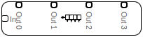
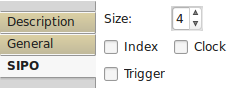

Sipo

Sipo is a single input - parallel output register.
Input Ports:
- In data type = Any
Input port. - Idx data type = Int32, opt=true
Select output to shown on Out port. - CLK data type = Control, opt=true
Register shift only on clock. - T data type = Control, opt=true
Data put on output ports on trigger.
Output Ports:
- Out data type = Any
Output port on index. - Out X data type = Any
Output port of X index data.
Properties:

- Size: <integer>
Register size. - Index:
If selected, there would be only one output port showing data depending on value on Index input. - Clock:
Shift right data in register on clock signal. - Trigger:
Put data on output only on trigger.